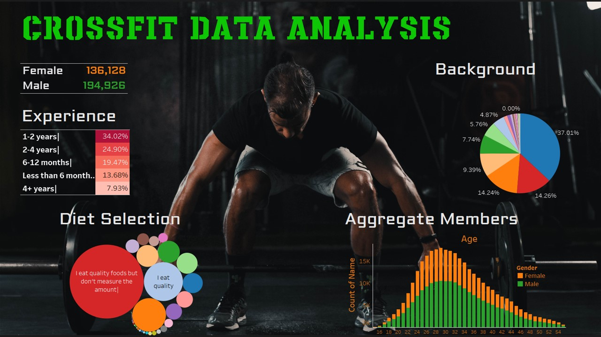

CrossFit Analytics
This analysis examines people's interest in CrossFit, utilizing a dataset containing 423,006 participants' statistics made available by the efforts of Sam Swift. To view this as an interactive dashboard, click here to access it on Tableau Public. Initial findings revealed a higher interest in men, which typically accounted for 50% more than women in CrossFit classes.
The demanding nature of CrossFit, emphasizing strength and endurance, requires prior fitness, a criterion affirmed by aggregating participants' backgrounds. The dashboard shows that 85% of participants possess some kind of sports background, making them compatible with CrossFit. In addition to fitness, CrossFit requires a healthy diet with calculated protein, carbs, fat, and sugar intake to fuel up before and after the workout. The data analysis shows that overwhelmingly, 89% of people maintain a quality food intake throughout the day. I can personally attest to this statistic, as during my time practicing CrossFit, I recognized the importance of a nutrition-rich diet to increase competitiveness and bring improvements week by week.
A striking statistic that caught my attention, and is shown in the dashboard is, the participation peaks between the age of 29 and 31, and then drops off without recovering. A trend emerges through further analysis, revealing that only 10% of individuals continue with their commitment to CrossFit. The decrease in participation beyond the age of 31 could be attributed to one or more of the following factors:
- Starting a family: When there’s a newborn in the family, the budget allocation changes, and as CrossFit membership is expensive (because it needs a trainer), people may leave CrossFit and start with the gym or get into running, biking or swimming to maintain fitness.
- Suburban house and CrossFit gym accessibility: As the houses are located in the suburbs, people may not have a CrossFit gym at a commutable distance. I remember when I was living in Indianapolis, I had to drive 20 mins one-way to a good CrossFit gym. Although it may not seem a lot, I was already driving 45 mins one-way to work, and this additional drive made my day hectic [1].
- Saving for homeownership: The average age of a fist time homeowner is 33. This means that they would start saving for the house downpayment a couple of years in advance, and quit CrossFit to save additional money.
- Fixed CrossFit class times: CrossFit classes are held early in the mornings, or in the evenings from 6 pm to 8 pm. This puts a time constraint on the daily schedule of people who like to unwind from their work before heading to the gym at their own pace, ensuring they will be back on time for dinner. Also, for people with kids, the evening time may not be feasible.
- Diet: CrossFit gives maximum results when a paleo diet is adopted [2]. While it’s healthy, it may not provide required source of protein to vegans and vegetarians. Additionally, without grain in the diet, it takes effort to take a healthy and tasty meal, and if people don’t have enough time to cook, then this may demotivate them to continue with CrossFit.
- Involvement in other sports/fitness workout: People who are planning to run a marathon or participate in a bike race or want to build up fitness towards sports like hockey, skiing, football, basketball, or softball want to do specific exercises that can enhance their capabilities in their sport.
- Injuries: CrossFit is famous for injuries from incorrect workout form, stating the importance of good trainers who can provide time and attention to new participants. Without proper guidance, there’s a higher possibility of injuries and can scare away new participants.
By analyzing this data and reading people’s stories across several websites, it made me think of a plan to increase the popularity of CrossFit. With the introduction of "Levels of Competence" and guidelines for the respective level, individuals would feel safe starting at Level 1 (similar to the White Belt in karate) and would be motivated to focus on fitness and diet to progress towards higher levels.
References:
- https://www.self.inc/info/first-time-homebuyer-statistics/
- https://www.healthline.com/nutrition/crossfit-diet#what-it-is
- https://goteamup.com/resources/members-quit-crossfit-gym
- https://medium.com/@thehungryclown/why-i-quit-crossfit-f4882edd1e21
- https://terilynadams.com/quitting-crossfit/
- https://notanotherwellnessblog.com/2019/03/08/why-i-quit-crossfit-and-why-its-okay-if-you-do-too/